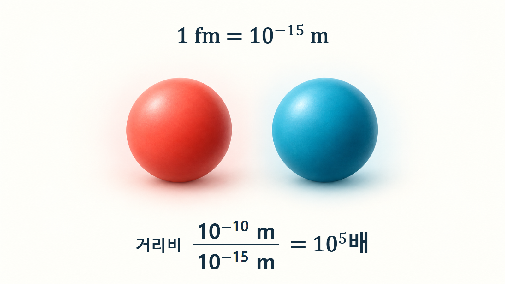
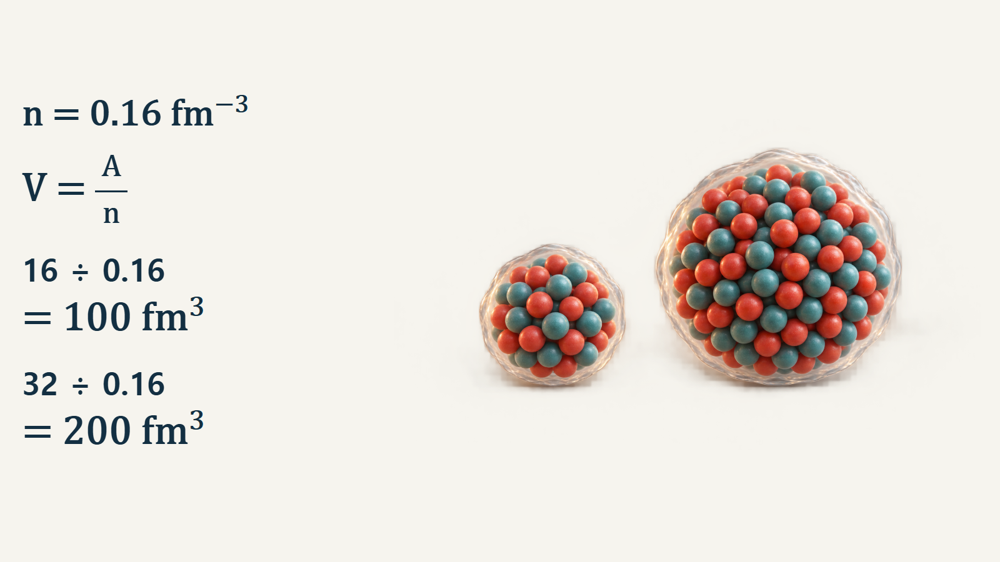

원자와 원자핵의 기초 · 012
핵력의 성질
핵력의 짧은 작용거리와 포화 성질, 두 가지 계산으로 이해하는 원자핵
핵력은 양성자와 중성자 사이에서 작용하는 짧은 거리의 상호작용입니다. 가까운 핵자를 묶지만, 거리가 줄어들수록 무조건 더 강하게 끌어당기는 힘은 아닙니다. 짧은 작용거리와 포화 성질을 함께 알아야 원자핵의 크기와 결합을 설명할 수 있습니다.
핵자 사이에 남는 강한 상호작용
양성자와 중성자를 묶어 핵자라고 부릅니다. 핵자 내부에서는 쿼크라는 더 작은 구성입자들이 강한 상호작용으로 결합합니다. 이 상호작용의 효과는 핵자 내부에만 머무르지 않고 핵자 사이에도 나타납니다. 이 글에서 말하는 핵력은 이 핵자 사이의 잔류 강한 상호작용입니다. 전자가 원자에 묶이는 전자기력과는 구별합니다. 중성자는 전하가 없지만 핵력에 참여하므로, 전기적으로 중성이라는 말이 다른 핵자와 상호작용하지 않는다는 뜻은 아닙니다. [1]
펨토미터 안에서 달라지는 힘
1 펨토미터(fm)는 10−15 m입니다. 핵력을 설명할 때 다루는 거리는 대략 수 fm 이내입니다. 핵자 사이가 멀어지면 핵력의 영향이 빠르게 줄어들고, 적절한 거리와 양자상태에서는 인력으로 결합에 기여합니다. 매우 짧은 거리에서는 통상적인 핵자 간 퍼텐셜 모형에 강한 반발 성분이 나타납니다. 퍼텐셜은 두 입자의 배치에 따른 위치에너지를 표현하는 함수입니다. 따라서 ‘강한 힘’이라는 이름만 보고 핵자들이 한 점으로 뭉친다고 생각하면 안 됩니다. [2] [4]
이 설명은 핵자를 단단한 구슬로 취급한다는 뜻이 아닙니다. 실제 핵자는 양자상태로 기술되며, 반발이 시작되는 거리와 인력의 모양도 선택한 상호작용 모형과 상태에 따라 달라집니다.
예시 1 — 원자와 원자핵의 거리 비교
학습용으로 원자 크기를 10−10 m, 핵력의 거리 척도를 1 fm로 잡습니다. 먼저 1 fm를 10−15 m로 바꾸어 단위를 맞춥니다. 두 거리의 비는 10−10/10−15=105, 즉 100,000배입니다. 핵력의 거리 척도 1 fm를 그림에서 1 mm로 확대하면 원자 크기는 100 m가 됩니다. 이는 모든 원자의 정확한 반지름을 뜻하는 값이 아니라 두 크기 수준을 비교하기 위한 계산입니다.
이 예시는 서로 다른 원자들이 일상적인 거리에서 핵력으로 직접 달라붙지 않는 이유를 보여줍니다. 핵력은 원자핵 규모에 국한되지만 전자기력은 원자의 결합과 물질의 구조에 관여합니다.

가까운 이웃에 집중되는 포화 성질
핵자 하나가 핵 전체의 모든 핵자와 똑같이 강하게 결합하는 것은 아닙니다. 짧은 작용거리 때문에 주변 핵자의 기여가 중요합니다. 핵을 크게 만들더라도 한 핵자 주변의 가까운 이웃 수가 핵자 총수만큼 계속 늘지는 않습니다. 이를 이해하는 출발점이 포화 성질입니다. 내부 핵물질의 밀도가 대략 일정하게 유지되고 전체 결합에너지의 주된 성분이 핵자 수에 비례하는 경향과 연결됩니다. [2]
다만 포화를 단순히 ‘이웃 몇 개와만 연결되는 고정 결합’으로 해석하지 않습니다. 실제 계산에는 핵자의 양자운동과 두 핵자·세 핵자 상호작용이 함께 들어갑니다. 핵 표면의 핵자는 내부보다 주변 환경이 다르므로 작은 핵과 큰 핵의 핵자당 결합에너지가 정확히 같지도 않습니다. [3]
예시 2 — 같은 밀도에서의 부피 증가
큰 핵 중심부의 대표 핵자수밀도 n≈0.16 fm−3를 균일한 핵물질 표본에 적용합니다. 핵자 수를 A, 부피를 V라 하면 n=A/V이므로 V=A/n입니다. 핵자 16개를 담는 표본은 V=16/0.16=100 fm3이고, 32개를 담는 표본은 V=32/0.16=200 fm3입니다. 핵자 수를 두 배로 하면 같은 밀도에서 부피도 두 배가 됩니다. 같은 모양을 유지할 때 길이 척도의 비는 2의 세제곱근인 약 1.26입니다. [4]
이 값은 산소-16이나 특정 질량수 32 핵종의 실제 부피를 측정한 결과가 아닙니다. 표면과 전하, 핵 구조를 생략한 균일밀도 계산으로, 핵자가 추가될 때 밀도만 끝없이 높아지는 것이 아니라 공간도 늘어난다는 의미를 확인합니다.

전하 독립성과 양자상태의 구별
핵력에는 전하 독립성이 근사적으로 성립합니다. 이는 전자기 효과를 구분하고 대응하는 양자상태를 비교할 때 양성자·중성자 조합의 강한 상호작용이 비슷하다는 뜻입니다. 세 조합의 모든 상태가 동일하거나 모두 결합한다는 뜻은 아닙니다. 핵자의 고유 각운동량인 스핀과 입자 사이의 공간적 배치에 따라서도 상호작용이 달라집니다. 정밀 모형에는 전하 의존성과 전자기력도 별도 항으로 포함합니다. [3]
| 핵력의 성질 | 설명할 수 있는 현상 | 그 성질만으로 정할 수 없는 값 |
|---|---|---|
| 짧은 작용거리 | 가까운 핵자 상호작용의 중요성 | 특정 핵종의 중성자 포획확률 |
| 포화 | 핵자 수 증가에 따른 부피 증가 경향 | 가벼운 핵까지 포함한 정확한 반지름 |
| 근사적 전하 독립성 | 대응 상태의 강한 상호작용 유사성 | 쿨롱반발을 포함한 전체 결합에너지 |
핵분열 모형과 원자로 계산의 연결
무거운 핵이 늘어나 두 덩어리를 잇는 목이 가늘어지면, 목을 가로질러 결합에 기여하던 짧은 거리 상호작용이 줄어듭니다. 양성자 사이의 장거리 쿨롱반발과 이 효과의 경쟁은 액적모형으로 핵분열을 이해하는 단서가 됩니다. 다만 실제 분열확률과 장벽을 이 설명 하나로 계산하지는 못합니다. [2]
원자로 해석에서는 핵력을 매번 쿼크 수준부터 계산하지 않습니다. 핵반응 실험과 이론을 바탕으로 정리된 단면적 자료를 사용합니다. 단면적은 입사입자가 특정 반응을 일으킬 가능성을 면적 단위로 나타낸 값입니다. 핵력의 성질은 그 자료를 해석하는 물리적 배경이며, 작용거리 1 fm를 원의 반지름으로 넣어 얻은 면적이 실제 반응단면적을 대신하지는 않습니다. [5]
핵심 정리
핵력은 핵자 사이의 잔류 강한 상호작용이며, 짧은 거리에서 결합을 만들고 상태에 따라 다른 성질을 보입니다. 포화는 핵이 커질 때 가까운 이웃 환경과 내부 밀도가 비슷하게 유지되는 경향을 설명합니다. 거리비 계산은 핵력의 공간 범위를, 균일밀도 계산은 핵자 수와 부피의 관계를 보여줍니다. 실제 핵종의 결합과 반응확률을 판단할 때는 이 개념 위에 스핀, 전자기력, 핵 구조와 실험자료를 더해야 합니다.